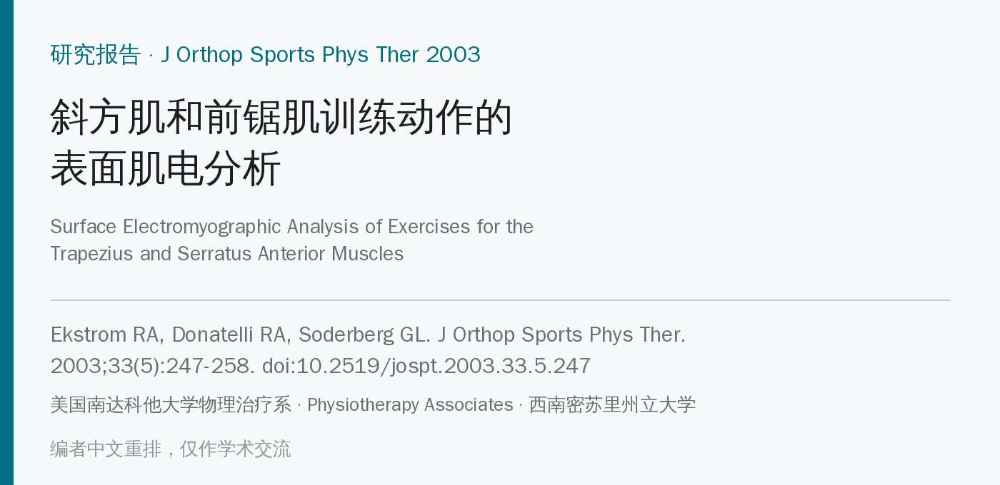
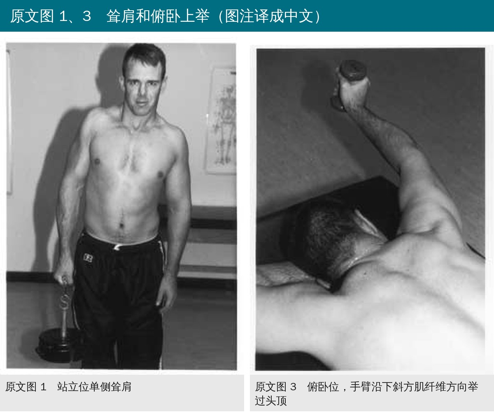
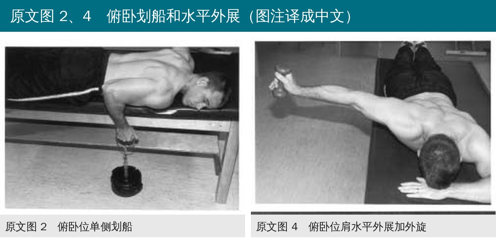
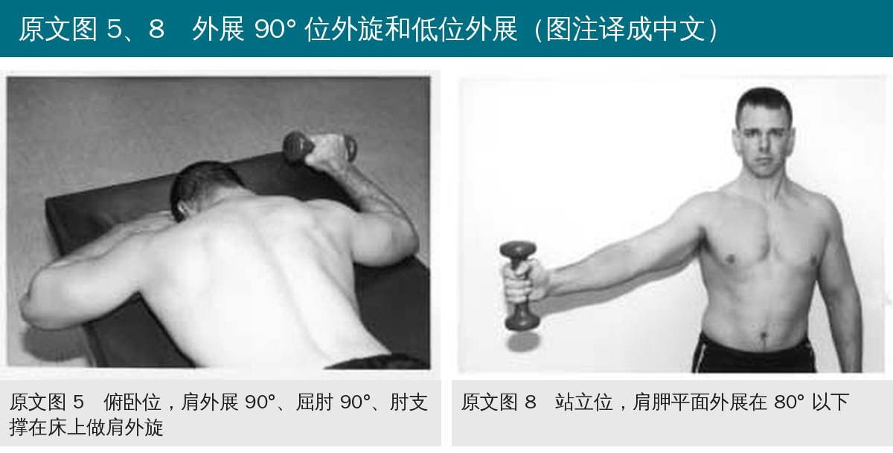
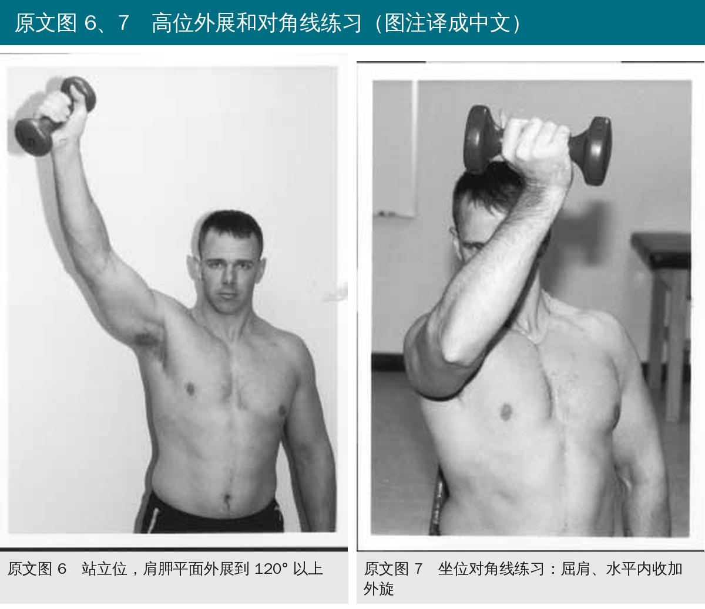
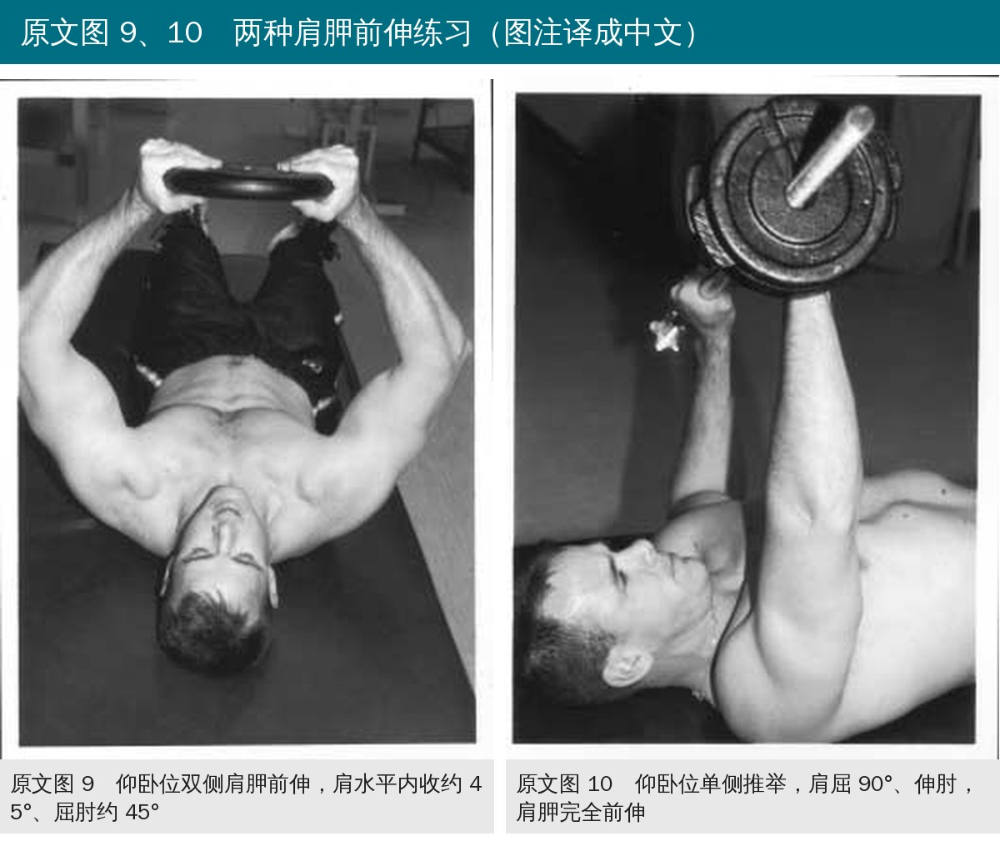
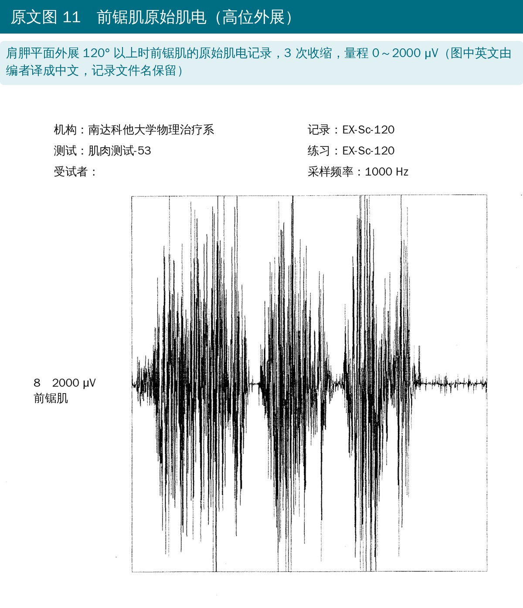
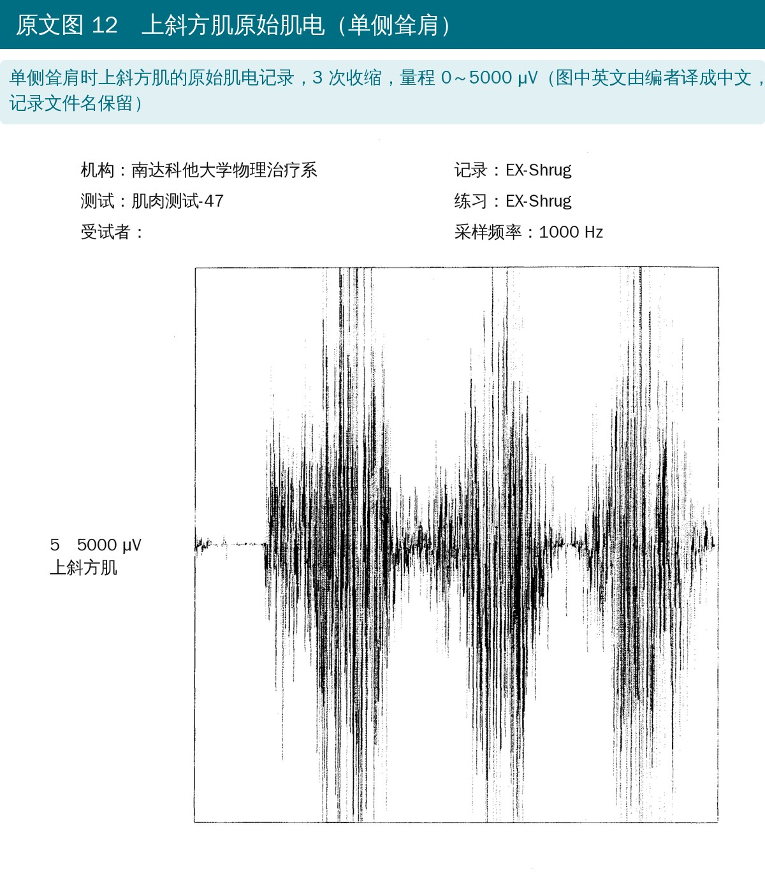
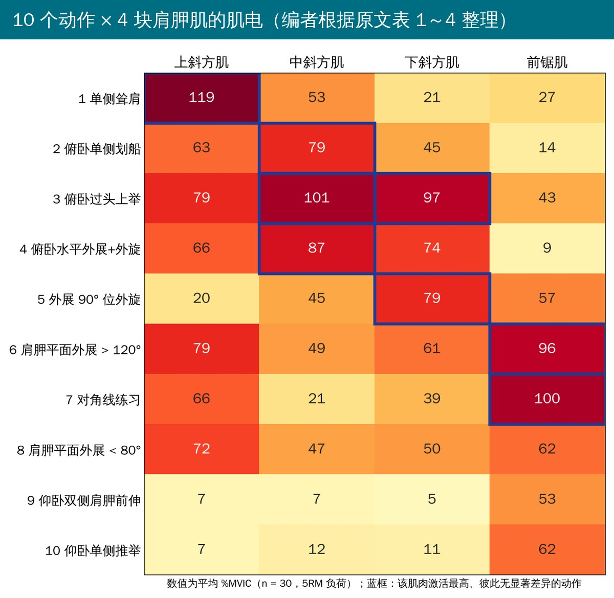
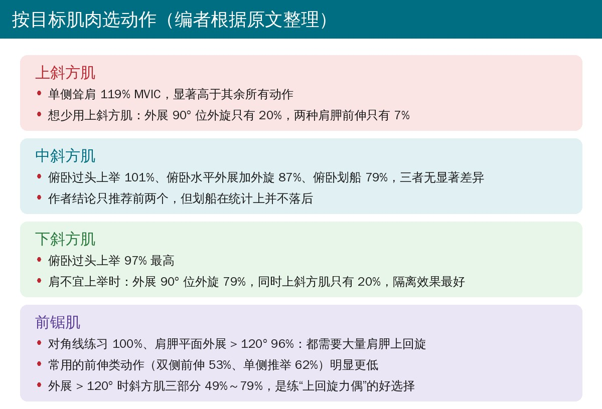

🔖原文信息（编者中文重排）
📚 文献信息
▪ Ekstrom RA, Donatelli RA, Soderberg GL. Surface electromyographic analysis of exercises for the trapezius and serratus anterior muscles. J Orthop Sports Phys Ther. 2003;33(5):247-258. doi:10.2519/jospt.2003.33.5.247
▪ 中文题目：斜方肌和前锯肌训练动作的表面肌电分析
▪ 作者来自美国南达科他大学物理治疗系、Physiotherapy Associates、西南密苏里州立大学物理治疗系；第一作者落基山健康职业大学 DSc 学位研究
▪ 研究类型：前瞻性、单组、重复测量设计
• 上斜方肌、下斜方肌和前锯肌被认为是仅有的肩胛上回旋肌，决定肩肱节律
• 肩完全上举时肩胛上回旋 58°～65°；上举前 30°～60° 肩胛主要找稳定位置，80°～140° 上回旋最多，140° 以上又减少
• 负荷、疲劳、肩峰撞击、盂肱不稳和姿势改变都会扰乱肩肱节律；Ludewig 等发现撞击患者上举时斜方肌活动增加、前锯肌活动减少
• 既往肌电研究多是低强度或主动运动，强度控制不严，MVIC 测试姿势也常不清楚或不够“最大”
• 研究目的：在高强度（5RM）下比较 10 个动作，找出最能激活上、中、下斜方肌和前锯肌的动作
• 受试者：30 名健康人（男 10、女 20），22～46 岁，平均 27.2 岁，无肩部问题
• 电极：右侧上、中、下斜方肌和前锯肌贴表面电极，电极中心距 30 mm；前锯肌电极沿腋中线第 6～8 肋
• 标准化：除 Kendall 徒手肌力测试体位外，又测了 5 种体位，每人每块肌肉取肌电最高的那次作为 MVIC
• 强度：每个动作先测 5RM（约最大负荷的 85%～90%），用这个负荷采集肌电；向心期 5 秒、节拍器控速，每个动作做 3 次，顺序随机抽签
• 取 3 次中幅值最高那次的 2 秒窗口，20 毫秒均方根平滑；10 人同日 15 分钟后重测，计算信度
• 每块肌肉做重复测量方差分析，LSD 两两比较，P < 0.05

🔖原文图 1、3（照片为原图，图注编者译成中文）

🔖原文图 2、4（照片为原图，图注编者译成中文）

🔖原文图 5、8（照片为原图，图注编者译成中文）

🔖原文图 6、7（照片为原图，图注编者译成中文）

🔖原文图 9、10（照片为原图，图注编者译成中文）
• 信度：肌肉作为主动肌时重测信度多为 0.91～0.98，上斜方肌较低；作为协同肌或拮抗肌时可低到 0.05～0.30
• 上斜方肌：单侧耸肩 119% ± 23%，显著高于其余 9 个动作；其次是高位外展、俯卧过头上举（都是 79%）
• 中斜方肌：俯卧过头上举 101% ± 32%、俯卧水平外展加外旋 87%、俯卧划船 79%，三者无显著差异，都显著高于其余动作
• 下斜方肌：俯卧过头上举 97% ± 16% 最高，与外展 90° 位外旋（79%）无显著差异；水平外展加外旋 74% 次之
• 前锯肌：对角线练习 100% ± 24%、肩胛平面外展 120° 以上 96% ± 24%，两者无差异，显著高于其余 8 个动作；外展 80° 以下只有 62%
• 两种肩胛前伸动作（仰卧双侧前伸 53%、单侧推举 62%）对前锯肌的激活明显低于需要大量上回旋的动作

🔖原文图 11（编者把图中英文译成中文）

🔖原文图 12（编者把图中英文译成中文）

🔖编者根据原文表 1～4 整理
• 上斜方肌：耸肩最好；Moseley 等认为划船最高，本研究划船只有 63%，作者推测与电极类型（细丝 vs 表面）和强度不同有关
• 中、下斜方肌：俯卧过头上举和水平外展加外旋就是 Kendall 的徒手肌力测试体位，激活最高
• 下斜方肌的替代动作：肩不宜高位上举时，可用俯卧外展 90° 位外旋，它使肩胛最大程度下沉，对下斜方肌的隔离效果最好（上斜方肌 20%、中斜方肌 45%）
• 划船：中斜方肌 79%、上 63%、下 45%，不是练整块斜方肌的最佳动作，但适合早期不宜上举的患者
• 前锯肌：需要大量肩胛上回旋的动作远好于单纯前伸；对角线练习还能减少斜方肌参与、让前锯肌承担更多负荷，撞击患者可能比外展更好做
• 避开疼痛弧：肩胛平面外展只做 80° 以下和 120° 以上，避开最易撞击的范围；很多撞击患者只要避开疼痛弧，可以在 120° 以上练
• 同时练上回旋力偶：肩胛平面外展 120° 以上，斜方肌三部分 49%～79%、前锯肌 96%，最适合训练斜方肌和前锯肌的协同

🔖编者根据原文整理
• 高强度是亮点：用 5RM 负荷和节拍器控速，比以往低强度研究更接近力量训练实际
• 健康人、样本中等：30 名无肩痛者，不能直接推到撞击、不稳或术后患者
• MVIC 可能没测到最大：耸肩上斜方肌 119%、过头上举中斜方肌 101%，超过 100% MVIC，说明部分肌肉的“最大”测试并不最大，%MVIC 的绝对值要谨慎看
• 表面电极串扰：前锯肌、中斜方肌附近还有菱形肌、背阔肌等，作者认为大块浅表肌肉串扰不明显，但没有验证
• 协同肌信度差：如耸肩时下斜方肌 ICC 0.05、单侧推举时上斜方肌 ICC 0.30，这些格子的数值基本不可信
• 动态收缩：采集的是向心期，肌长和速度变化会影响肌电与力的关系；取的是 3 次中最高的 2 秒，偏向峰值
• 只有肌电，没有测肩胛运动学，也没有训练干预，不能证明这些动作能纠正肩肱节律或改善症状
• 中斜方肌结论漏了划船：表 2 显示俯卧过头上举、水平外展加外旋和划船三者无显著差异，但摘要和结论只把前两个列为最佳
• “最佳”不等于显著最高：下斜方肌的俯卧过头上举（97%）与外展 90° 位外旋（79%）之间无显著差异，正文却称前者为“optimal”，后者只是替代
• 信度范围说法与表格不符：正文说上斜方肌作为主动肌时 ICC 为 0.81～0.89，表 1 中肩胛平面外展 120° 以上为 0.80、80° 以下为 0.75
• 前锯肌在过头上举中“无法可靠测量”：讨论这样说，但表 4 仍给出 43% 并参与统计（ICC 0.68），且归入与 3～7 号动作“无显著差异”的一组
• 格式小误：表 4 第 6 行编号“6 Bilateral”缺句点
• 先想练哪块：上斜方肌过度活跃、下斜方肌和前锯肌不足是撞击患者的常见模式，选动作时要看“想练的高、不想练的低”
• 下斜方肌：首选俯卧过头上举（Y 字）；肩不宜上举时，用俯卧外展 90° 位外旋，上斜方肌参与最少
• 中斜方肌：俯卧水平外展加外旋（T 字）、俯卧过头上举、俯卧划船都行
• 前锯肌：对角线练习和肩胛平面外展 120° 以上最好；单纯前伸（推举、拥抱式）激活偏低，可作为早期或低负荷选择
• 上斜方肌已经过度活跃：少用耸肩，警惕高位外展和过头上举中上斜方肌也有 79%
• 避开疼痛弧：撞击患者做肩胛平面外展时，可只练 80° 以下和 120° 以上
• 注意强度：这些数值是 5RM 负荷下测得的，换成轻负荷时激活会更低
表 1 10 个肩部动作中上斜方肌的肌电激活（%MVIC，均值 ± 标准差）及重测信度
| 动作 | %MVIC | ICC |
|---|---|---|
| 1. 单侧耸肩 | 119 ± 23* | 0.81 |
| 2. 肩胛平面外展 120° 以上 | 79 ± 19† | 0.80 |
| 3. 俯卧过头上举（沿下斜方肌纤维方向） | 79 ± 18† | 0.89 |
| 4. 肩胛平面外展 80° 以下 | 72 ± 19† | 0.75 |
| 5. 俯卧水平外展加外旋 | 66 ± 18† | 0.83 |
| 6. 对角线练习（屈肩、水平内收加外旋） | 66 ± 10† | 0.81 |
| 7. 俯卧单侧划船 | 63 ± 17† | 0.91 |
| 8. 外展 90° 位外旋 | 20 ± 18‡ | 0.91 |
| 9. 仰卧单侧推举 | 7 ± 3 | 0.30 |
| 10. 仰卧双侧肩胛前伸 | 7 ± 5 | 0.94 |
注：* 显著高于动作 2～10；† 动作 2～7 之间无显著差异，但都显著高于动作 8～10；‡ 显著高于动作 9、10（P < 0.05）。
表 2 10 个肩部动作中中斜方肌的肌电激活（%MVIC，均值 ± 标准差）及重测信度
| 动作 | %MVIC | ICC |
|---|---|---|
| 1. 俯卧过头上举（沿下斜方肌纤维方向） | 101 ± 32* | 0.91 |
| 2. 俯卧水平外展加外旋 | 87 ± 20† | 0.98 |
| 3. 俯卧单侧划船 | 79 ± 23† | 0.97 |
| 4. 单侧耸肩 | 53 ± 25‡ | 0.86 |
| 5. 肩胛平面外展 120° 以上 | 49 ± 16‡ | 0.80 |
| 6. 肩胛平面外展 80° 以下 | 47 ± 16‡ | 0.82 |
| 7. 外展 90° 位外旋 | 45 ± 36‡ | 0.87 |
| 8. 对角线练习（屈肩、水平内收加外旋） | 21 ± 9 | 0.83 |
| 9. 仰卧单侧推举 | 12 ± 10 | 0.27 |
| 10. 仰卧双侧肩胛前伸 | 7 ± 3 | 0.86 |
注：* 显著高于动作 4～10；† 动作 2、3 之间无显著差异，但都显著高于动作 4～10；‡ 动作 4～7 之间无显著差异，但都显著高于动作 8～10（P < 0.05）。
表 3 10 个肩部动作中下斜方肌的肌电激活（%MVIC，均值 ± 标准差）及重测信度
| 动作 | %MVIC | ICC |
|---|---|---|
| 1. 俯卧过头上举（沿下斜方肌纤维方向） | 97 ± 16* | 0.96 |
| 2. 外展 90° 位外旋 | 79 ± 21† | 0.96 |
| 3. 俯卧水平外展加外旋 | 74 ± 21‡ | 0.92 |
| 4. 肩胛平面外展 120° 以上 | 61 ± 19§ | 0.98 |
| 5. 肩胛平面外展 80° 以下 | 50 ± 21§ | 0.94 |
| 6. 俯卧单侧划船 | 45 ± 17§ | 0.80 |
| 7. 对角线练习（屈肩、水平内收加外旋） | 39 ± 15 | 0.94 |
| 8. 单侧耸肩 | 21 ± 10 | 0.05 |
| 9. 仰卧单侧推举 | 11 ± 5 | 0.20 |
| 10. 仰卧双侧肩胛前伸 | 5 ± 2 | 0.70 |
注：* 显著高于动作 3～10；† 显著高于动作 5～10；‡ 显著高于动作 6～10；§ 动作 4～6 之间无显著差异，但都显著高于动作 7～10（P < 0.05）。
表 4 10 个肩部动作中前锯肌的肌电激活（%MVIC，均值 ± 标准差）及重测信度
| 动作 | %MVIC | ICC |
|---|---|---|
| 1. 对角线练习（屈肩、水平内收加外旋） | 100 ± 24* | 0.94 |
| 2. 肩胛平面外展 120° 以上 | 96 ± 24* | 0.96 |
| 3. 肩胛平面外展 80° 以下 | 62 ± 18† | 0.93 |
| 4. 仰卧单侧推举 | 62 ± 19† | 0.98 |
| 5. 外展 90° 位外旋 | 57 ± 22† | 0.89 |
| 6. 仰卧双侧肩胛前伸 | 53 ± 28† | 0.80 |
| 7. 俯卧过头上举（沿下斜方肌纤维方向） | 43 ± 17† | 0.68 |
| 8. 单侧耸肩 | 27 ± 17 | 0.85 |
| 9. 俯卧单侧划船 | 14 ± 6 | 0.97 |
| 10. 俯卧水平外展加外旋 | 9 ± 3 | 0.96 |
注：* 动作 1、2 之间无显著差异，但都显著高于动作 3～10；† 动作 3～7 之间无显著差异，但都显著高于动作 8～10（P < 0.05）。ICC，组内相关系数；%MVIC，最大自主等长收缩百分比。各表按该肌肉激活从高到低排序，序号与原文图号不同。
欢迎关注骨科康复小黄公众号，获取更多物理治疗的专业知识！
📄参考文献：
Ekstrom RA, Donatelli RA, Soderberg GL. Surface electromyographic analysis of exercises for the trapezius and serratus anterior muscles. J Orthop Sports Phys Ther. 2003;33(5):247-258. doi:10.2519/jospt.2003.33.5.247
本文为中文解读，仅作学术交流：照片引自原文图 1～图 10（图注由编者译成中文），原文图 11、12 中的英文由编者译成中文覆盖原位置，肌电热图和选动作卡为编者根据原文表 1～4 整理，表格为编者翻译。原文 © 2003 Journal of Orthopaedic & Sports Physical Therapy，版权归原出版方所有。